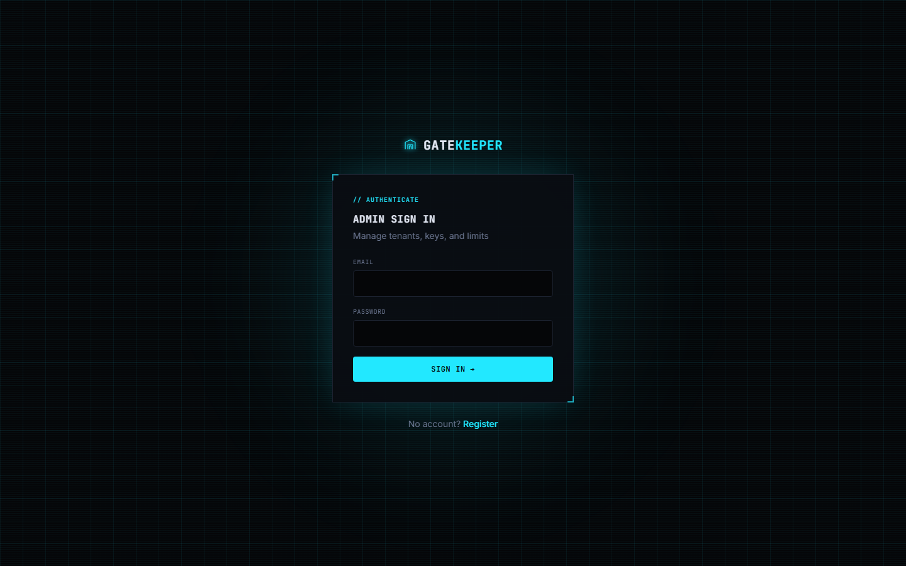

Live demo

GateKeeper
Multi-tenant API gateway and rate limiter. The hard part: two requests must never spend the same token.
- Token bucket written as one atomic Redis Lua script, so concurrent requests cannot race
- Proven under load: 20 simultaneous requests give an exact allowed / rejected split, every run
- SHA-256 hashed API keys shown once, instant revocation, per-tenant quotas, live analytics